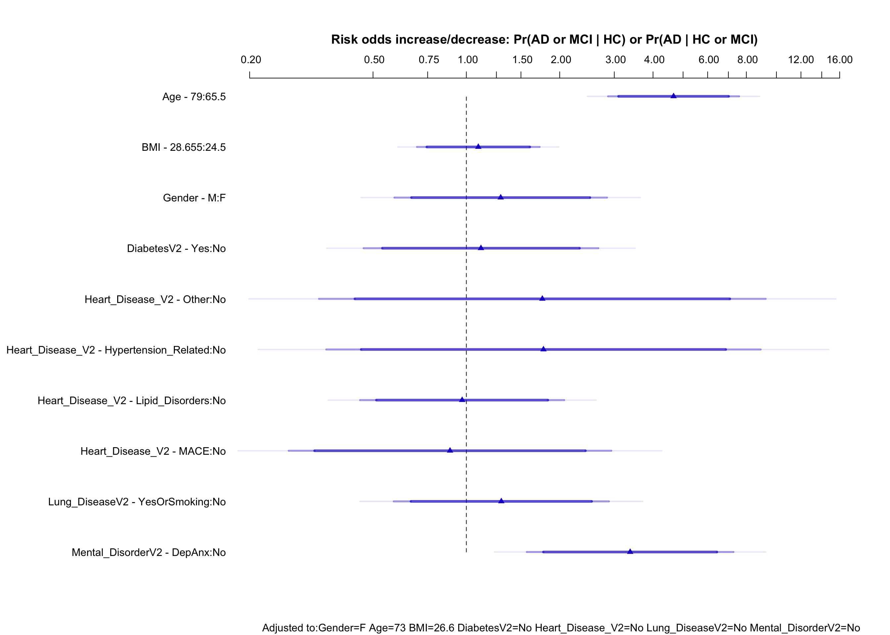
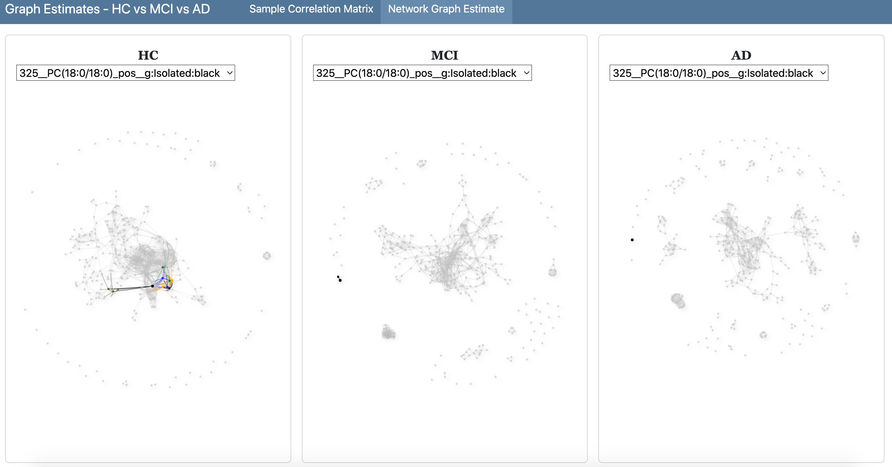

Modeling & Assessing Lipid Added Value
1 Scope
Using Alzheimer severity data, analysis and identification of potential lipid biomarkers after adjustment for clinical information. Development of a clinical prediction model.
2 Base Clinical Data & Model
See the file metaDat_desc_201124 for the data processing steps that led to the above data and for a more detailed data description i.e. missing values per variable, typical values per variable etc.
A base model is implemented on the ordered groups of HC, MCI and AD, using the typically available clinical information as above. The model is an ordinal regression one, fully pre-specified with the predictor variables also considered to have potential non-linear associations with the groups, as well as all possible 2-way interactions amongst them. With a sample size of 155, the maximum effective degrees of freedom that can be used before overfitting occurs is about 12. This amount of degrees of freedom is used in order to construct a penalized version of the model.
See more detailed information on the model type and its suitability in the section Proportional Odds Assumption below.
The model terms are as follows:
groupV2 ~ Gender + Age + rcs(BMI, 3) + DiabetesV2 + Heart_Disease_V2 + Lung_DiseaseV2 + Mental_DisorderV2 + Gender * Age + Gender * rcs(BMI, 3) + Gender * DiabetesV2 + Gender * Heart_Disease_V2 + Gender * Lung_DiseaseV2 + Gender * Mental_DisorderV2 + Age * rcs(BMI, 3) + Age * DiabetesV2 + Age * Heart_Disease_V2 + Age * Lung_DiseaseV2 + Age * Mental_DisorderV2 + rcs(BMI, 3) * DiabetesV2 + rcs(BMI, 3) * Heart_Disease_V2 + rcs(BMI, 3) * Lung_DiseaseV2 + rcs(BMI, 3) * Mental_DisorderV2 + DiabetesV2 * Lung_DiseaseV2 + DiabetesV2 * Mental_DisorderV2 + Lung_DiseaseV2 * Mental_DisorderV2
Where the * symbol denotes the interaction between two variables and rcs denotes a restricted cubic spline transformation with 3 knots i.e. non-linear associations.
The model’s reference values can be seen below in the row named Adjust to:
id groupV2 Gender Age BMI DiabetesV2 Heart_Disease_V2 Lung_DiseaseV2 Mental_DisorderV2 MMSE
Low:effect <NA> <NA> <NA> 65.5 24.500 <NA> <NA> <NA> <NA> 18
Adjust to 1 HC F 73.0 26.600 No No No No 24
High:effect <NA> <NA> <NA> 79.0 28.655 <NA> <NA> <NA> <NA> 28
Low:prediction 1 HC F 18.0 17.090 No No No No 2
High:prediction 99 AD M 88.0 38.290 Yes MACE YesOrSmoking DepAnx 30
Low 1 HC F 18.0 17.090 No No No No 2
High 99 AD M 88.0 38.290 Yes MACE YesOrSmoking DepAnx 30
Values:
groupV2 : HC MCI AD
Gender : F M
DiabetesV2 : No Yes
Heart_Disease_V2 : No Other Hypertension_Related Lipid_Disorders MACE
Lung_DiseaseV2 : No YesOrSmoking
Mental_DisorderV2 : No DepAnx Variable Effects
Effects Response: groupV2
|
|||||||
| Low | High | Δ | Effect | S.E. | Lower 0.95 | Upper 0.95 | |
|---|---|---|---|---|---|---|---|
| Age | 65.5 | 79.00 | 13.500 | 1.53900 | 0.2481 | 1.0530 | 2.0250 |
| Odds Ratio | 65.5 | 79.00 | 13.500 | 4.66000 | 2.8650 | 7.5780 | |
| BMI | 24.5 | 28.66 | 4.155 | 0.08880 | 0.2321 | -0.3662 | 0.5438 |
| Odds Ratio | 24.5 | 28.66 | 4.155 | 1.09300 | 0.6934 | 1.7220 | |
| Gender — M:F | 1.0 | 2.00 | 0.25510 | 0.4026 | -0.5340 | 1.0440 | |
| Odds Ratio | 1.0 | 2.00 | 1.29100 | 0.5863 | 2.8410 | ||
| DiabetesV2 — Yes:No | 1.0 | 2.00 | 0.10850 | 0.4446 | -0.7629 | 0.9798 | |
| Odds Ratio | 1.0 | 2.00 | 1.11500 | 0.4663 | 2.6640 | ||
| Heart_Disease_V2 — Other:No | 1.0 | 2.00 | 0.56430 | 0.8460 | -1.0940 | 2.2220 | |
| Odds Ratio | 1.0 | 2.00 | 1.75800 | 0.3349 | 9.2300 | ||
| Heart_Disease_V2 — Hypertension_Related:No | 1.0 | 3.00 | 0.57260 | 0.8227 | -1.0400 | 2.1850 | |
| Odds Ratio | 1.0 | 3.00 | 1.77300 | 0.3535 | 8.8910 | ||
| Heart_Disease_V2 — Lipid_Disorders:No | 1.0 | 4.00 | -0.03124 | 0.3866 | -0.7889 | 0.7264 | |
| Odds Ratio | 1.0 | 4.00 | 0.96920 | 0.4543 | 2.0680 | ||
| Heart_Disease_V2 — MACE:No | 1.0 | 5.00 | -0.12130 | 0.6110 | -1.3190 | 1.0760 | |
| Odds Ratio | 1.0 | 5.00 | 0.88570 | 0.2674 | 2.9330 | ||
| Lung_DiseaseV2 — YesOrSmoking:No | 1.0 | 2.00 | 0.25960 | 0.4075 | -0.5392 | 1.0580 | |
| Odds Ratio | 1.0 | 2.00 | 1.29600 | 0.5832 | 2.8820 | ||
| Mental_DisorderV2 — DepAnx:No | 1.0 | 2.00 | 1.21700 | 0.3912 | 0.4497 | 1.9830 | |
| Odds Ratio | 1.0 | 2.00 | 3.37500 | 1.5680 | 7.2670 | ||

Variable Selection
From the variable effects above, Age and Mental_DisorderV2 seem to be the variables that contribute them most in the model. For assessing lipid added value, a more parsimonious model can be used that best approximates the full model above. In order to so this, a stepwise backward selection procedure is applied with the following results.
Deleted Chi-Sq d.f. P Residual d.f. P AIC
BMI * Heart_Disease_V2 0.26 8 1.0000 0.26 8 1 -15.74
Heart_Disease_V2 0.12 4 0.9983 0.37 12 1 -23.63
Age * Heart_Disease_V2 0.79 4 0.9395 1.17 16 1 -30.83
Gender * Heart_Disease_V2 0.96 4 0.9154 2.13 20 1 -37.87
BMI 0.00 2 0.9984 2.13 22 1 -41.87
BMI * Lung_DiseaseV2 0.10 2 0.9526 2.23 24 1 -45.77
BMI * DiabetesV2 0.19 2 0.9085 2.42 26 1 -49.58
BMI * Mental_DisorderV2 0.59 2 0.7432 3.02 28 1 -52.98
Gender * BMI 0.82 2 0.6648 3.83 30 1 -56.17
Age * BMI 1.15 2 0.5631 4.98 32 1 -59.02
DiabetesV2 * Mental_DisorderV2 0.00 1 0.9944 4.98 33 1 -61.02
Lung_DiseaseV2 * Mental_DisorderV2 0.04 1 0.8497 5.02 34 1 -62.98
DiabetesV2 0.04 1 0.8366 5.06 35 1 -64.94
Gender * Age 0.07 1 0.7845 5.13 36 1 -66.87
Age * Lung_DiseaseV2 0.08 1 0.7800 5.21 37 1 -68.79
Age * DiabetesV2 0.16 1 0.6931 5.37 38 1 -70.63
Gender * DiabetesV2 0.11 1 0.7404 5.48 39 1 -72.52
Gender * Mental_DisorderV2 0.22 1 0.6354 5.70 40 1 -74.30
Gender * Lung_DiseaseV2 0.27 1 0.6067 5.97 41 1 -76.03
DiabetesV2 * Lung_DiseaseV2 0.82 1 0.3659 6.78 42 1 -77.22
Lung_DiseaseV2 0.67 1 0.4139 7.45 43 1 -78.55
Gender 1.11 1 0.2921 8.56 44 1 -79.44
Age * Mental_DisorderV2 1.38 1 0.2396 9.95 45 1 -80.05
Approximate Estimates after Deleting Factors
Coef S.E. Wald Z P
y>=MCI -6.2611 1.19678 -5.232 1.680e-07
y>=AD -8.3196 1.28754 -6.462 1.036e-10
Age 0.1125 0.01741 6.458 1.063e-10
Mental_DisorderV2=DepAnx 1.0324 0.31026 3.328 8.759e-04
Factors in Final Model
[1] Age Mental_DisorderV2By keeping only Age and Mental_DisorderV2 as predictors in the model, the model is parsimonious with having only two variables explaining the variation of the HC/MCI/AD grouping, while at the same time retaining model performance. For example, the C rank discrimination index is ~ 82.26% for the full model when accounting for sampling variation, while it is ~ 82.46% for the reduced model and after accounting for both sampling variation and the variable selection process. These are the frequencies of entered terms in the model, in the 300 bootstrap samples i.e. simulation, sorted in decreasing order:
Age Mental_DisorderV2 Lung_DiseaseV2 Gender
300 295 75 68
Age * Mental_DisorderV2 DiabetesV2 * Lung_DiseaseV2 Gender * Lung_DiseaseV2 Gender * Mental_DisorderV2
61 39 24 23
Gender * DiabetesV2 Lung_DiseaseV2 * Mental_DisorderV2
15 15 Calibration
Partial Dependence Risk Profiles
Age - Adjusting For Mental_DisorderV2
Mental_DisorderV2 - Adjusting For Age = 73
Mental_DisorderV2 - Adjusting For Age = 43
3 Added Value From Lipids
Below three procedures of assessing lipid added value to the predictive performance of a model after adjusting for the clinical information of the Age & Mental_DisorderV2 variables.
The first procedure below is used to identify the biomarker candidate(s), while the other two procedures expand on the selected cases i.e. lipid(s).
Model Likelihood Ratio Statistic (LR)
There is a large number of candidate biomarkers i.e. 383 lipids. These are highly correlated and it is computationally difficult to fit a penalized model containing all lipids simultaneously. To assess the predictive value of each lipid on its own, but at the same time allow it to be adjusted for a fixed set of clinical variables, the bootstrap is used to get confidence intervals on importance ranks of all candidate features. Assessing each lipid on its own also has the merit of measuring its impact free from the other lipids in the network because including other lipids would mean adjustment for these additional lipids too, and this would dilute the assessment.
(Note: accounting for correlations in a lipid network is considered in the section below, titled Network Graph Estimates)
The importance measure used here is the gold standard likelihood ratio LR statistic of a model with 3 degrees of freedom compared to the null model. It does not matter that this statistic counts the Age and Mental_DisorderV2 effects, as we will be comparing all the 3 degrees of freedom LR statistics with different lipids in the model, but with Age & Mental_DisorderV2 always present i.e. lipids are adjusted for Age & Mental_DisorderV2.
As mentioned in the data processing section, the lipid data have been combined i.e. negative and positive ionization, and then log transformed and divided by 15. In addition, to facilitate easier data manipulation, the lipid names have been altered using the following logic e.g. LN1 means Lipid with Negative ionization and in the 1st column of the negative ionization data set; LP11 means Lipid with Positive ionization and in the 11th column of the positive ionization data set. These code names have been mapped to the actual lipid names, so that the real lipid names can be extracted with the final results.
Here is an excerpt of the data after being merged with Age & Mental_DisorderV2, with six randomly selected negative ionization lipids and six positive ionization lipids:
Initially, using the original data as above, each lipid is added separately in a model that includes Age & Mental_DisorderV2 as predictors, and the model’s LR statistic is extracted. Then the lipids are ranked so that top ranks correspond to the highest LR values. Below is a histogram showing the distribution of the LR statistics.
------------------------------------------------------------------------------------------------------------------------------------------------------------------
3 d.f. Chi-squares
length n NAs unique 0s mean meanCI'
383 383 0 371 0 80.10607 79.87063
100.0% 0.0% 0.0% 80.34151
.05 .10 .25 median .75 .90 .95
78.38756 78.41501 78.57490 79.09318 80.88470 83.26972 84.48205
range sd vcoef mad IQR skew kurt
16.35471 2.34345 0.02925 0.97218 2.30980 2.36637 7.23840
lowest : 78.37861, 78.37864, 78.37868, 78.37874, 78.37893
highest: 88.23853, 88.71046, 90.73349, 91.80461, 94.73332
' 95%-CI (classic)These top 3 lipids are indicated below:
| codeName | lipName | chisq | rank |
|---|---|---|---|
| LN3 | FFA_10_2 | 94.73332 | 1 |
| LP4 | CE(18:2) | 91.80461 | 2 |
| LN111 | PE(18:0/18:2) | 90.73349 | 3 |
Fitting a model with the top lipid and conducting an LR test i.e. anova, gives:
Logistic Regression Model
lrm(formula = groupV2 ~ Age + Mental_DisorderV2 + LN3, data = select(d_imp2_WithLipids,
groupV2, Age, Mental_DisorderV2, LN3), x = TRUE, y = TRUE)
Model Likelihood Discrimination Rank Discrim.
Ratio Test Indexes Indexes
Obs 155 LR chi2 94.73 R2 0.537 C 0.881
HC 22 d.f. 3 R2(3,155)0.447 Dxy 0.761
MCI 44 Pr(> chi2) <0.0001 R2(3,121.7)0.530 gamma 0.762
AD 89 Brier 0.100 tau-a 0.437
max |deriv| 6e-07
Coef S.E. Wald Z Pr(>|Z|)
y>=MCI -52.7764 13.0902 -4.03 <0.0001
y>=AD -55.3151 13.1812 -4.20 <0.0001
Age 0.1201 0.0221 5.43 <0.0001
Mental_DisorderV2=DepAnx 1.3515 0.3956 3.42 0.0006
LN3 47.6738 13.8373 3.45 0.0006
Wald Statistics for groupV2
|
|||
| χ2 | d.f. | P | |
|---|---|---|---|
| Age | 40.16 | 1 | <0.0001 |
| Mental_DisorderV2 | 12.35 | 1 | 0.0004 |
| LN3 | 16.35 | 1 | <0.0001 |
| TOTAL | 94.73 | 3 | <0.0001 |
LN3’s p-value does not survive a Bonferroni correction at 0.05, but it does survive the less strict but more powerful FDR adjustment for 383 comparisons:
p.adjust(1e-04, method = "fdr", n = 383)[1] 0.0383It seems that LN3 or the lipid FFA_10_2 has a somewhat significant added value after adjusting for the Age & Mental_DisorderV2 variables. To account for sampling variation, the previous procedure is in addition bootstrapped 300 times, and the results are combined in order to get nonparametric percentile confidence intervals for the lipid ranks:
In addition, using the quantiles of the bootstrapped rank distribution, the central 95% interval is:
2.5% 97.5%
1 77 FFA_10_2 was replicated as the winner in at least 2.5% of the bootstrap resamples, but the upper confidence interval limit shows that the data are consistent with FFA_10_2 being in the 1/5 higher upper part of the 383 features’ importance i.e. 77 compared to 384/5 = 76.8.
While the 0-80 interval is:
0% 80%
1 17 The FFA_10_2 lipid happens to be in the top 17 rank about 80% of the time.
Nested Likelihood Ratio Test
Another similar approach for assessing significance of the FFA_10_2 lipid, is based on repeatedly applying the likelihood ratio test in a nested fashion in order to compare a model with the FFA_10_2 lipid to a model without it i.e. one only containing Age & Mental_DisorderV2, while at the same time FDR adjusting the p-value. Following upon this procedure can provide a different perspective on the magnitude of the significance that’s based on adjusted p-values:
| pval_FDR <= 0.05 | n | proportion |
|---|---|---|
| No | 109 | 0.36 |
| Yes | 192 | 0.64 |
| pval_FDR <= 0.03 | n | proportion |
|---|---|---|
| No | 126 | 0.42 |
| Yes | 175 | 0.58 |
| pval_FDR <= 0.01 | n | proportion |
|---|---|---|
| No | 147 | 0.49 |
| Yes | 154 | 0.51 |
Relative Explained Variation (REV)
Conducting an anova on the model containing Age, Mental_DisorderV2 and FFA_10_2 gives the Chi-Square statistic which is an indicator of variable importance. This was seen previously on the table called Wald Statistics for groupV2 above. Relative explained variation is a procedure that estimates the accuracy of these statistics under repeated sampling, and produces confidence intervals for them:
The FFA_10_2 lipid adds a fraction of 0.18 of new diagnostic information to Age and Mental_DisorderV2. In terms of percentage to total REV, this is 29% compared to the model’s total of 64%.
To further visualize the diagnostic yield of FFA_10_2, the plot below estimates the with FFA_10_2 vs without FFA_10_2 risk probability for each of the threes state transitions. Quantile regression is used to estimate the 0.1 and 0.9 quantiles of the with risk as a function of the without risk. This allows one to readily see the typical changes in a without probability once FFA_10_2 is known and added in the base model.
By plotting the without-with model risk difference vs Age we can easily see the dependence on Age of the added value of the FFA_10_2 lipid. Result is shown after adjusting for Mental_DisorderV2 = DepAnx.
Model Update 1 - Testing For Non-linearities & Interactions
The previous model that includes the FFA_10_2 lipid to the Age & Mental_DisorderV2 base model, is now expanded with terms involving non-linearities and interactions, and then a backward term selection procedure is aplied in order to identify the best terms to keep in the model.
It seems that an interaction between the FFA_10_2 lipid with both Age & Mental_DisorderV2 is plausible as the backward selection procedure kept terms involving these interactions. The interaction of FFA_10_2 with Age can also be inferred from the plot Age ~ LN3 | group in the data processing page. Below is the model update.
Logistic Regression Model
lrm(formula = groupV2 ~ Age + Mental_DisorderV2 + LN3 + Mental_DisorderV2 *
LN3 + Age * LN3, data = dplyr::select(d_imp2_WithLipids,
groupV2, Age, Mental_DisorderV2, LN3), x = TRUE, y = TRUE,
scale = TRUE)
Model Likelihood Discrimination Rank Discrim.
Ratio Test Indexes Indexes
Obs 155 LR chi2 108.79 R2 0.592 C 0.881
HC 22 d.f. 5 R2(5,155)0.488 Dxy 0.762
MCI 44 Pr(> chi2) <0.0001 R2(5,121.7)0.574 gamma 0.763
AD 89 Brier 0.087 tau-a 0.437
max |deriv| 1e-07
Coef S.E. Wald Z Pr(>|Z|)
y>=MCI 191.8249 97.3829 1.97 0.0489
y>=AD 189.2634 97.3640 1.94 0.0519
Age -3.0599 1.3946 -2.19 0.0282
Mental_DisorderV2=DepAnx -90.8826 31.0427 -2.93 0.0034
LN3 -205.7519 101.4600 -2.03 0.0426
Mental_DisorderV2=DepAnx * LN3 95.4781 32.2217 2.96 0.0030
Age * LN3 3.2938 1.4521 2.27 0.0233
Updated Partial Dependence Risk Profiles
Test - Adding The Other LR Test Significant Lipids In The Model
A quick check shows that the 3 lipids with highest LR statistics that were singled out previously are all significant at the 20% alpha level after FDR p-value adjustment. They are also not correlated much, which makes them good candidates to enter into the model.
| codeName | lipName | chisq | rank |
|---|---|---|---|
| LN3 | FFA_10_2 | 94.73332 | 1 |
| LP4 | CE(18:2) | 91.80461 | 2 |
| LN111 | PE(18:0/18:2) | 90.73349 | 3 |
Correlation matrix:
LN3 LP4 LN111
LN3 1.0000000 0.1016999 -0.3001981
LP4 0.1016999 1.0000000 -0.2249528
LN111 -0.3001981 -0.2249528 1.0000000However, after running various tests, addition of the CE(18:2) and PE(18:0/18:2) lipids in the model does not improve the results much i.e. worse mean absolute error using the actual minus the predicted probabilities on the bootstrapped samples as well as worse calibration of the predicted probabilities.
Proportional Odds Assumption (PO)
Two types of excess probabilities are calculated by the model:
- The probability or risk of a patient’s condition to worsen i.e. the probability to transition from the HC status to either the MCI or the AD status. This is denoted in model output results and visuals as
y>=MCI. - The probability or risk of a patient to be diagnosed with AD i.e. the probability to transition from either the HC or the MCI status to the AD status. This is denoted in model output results and visuals as
y>=AD.
The PO assumption dictates that the partial effect (i.e. model coefficient) of each predictor variable on the outcome is the same in both of the above probability types 1 and 2. This is a reasonable assumption for many severity type outcomes that are also not discontinuous i.e. the outcome categorization is not a hard one. Indeed, the outcome category definitions have been based on the MMSE index (see data processing page) which is on a scale from 0 to 30, with decreasing values denoting higher disease severity. Medical professionals have split this index into three parts in order to define the three categories of HC, MCI and AD, and such a split is arbitrary.
The model type including the PO assumption is also appropriate when the sample size is not large i.e. 155 observations, and especially when the outcome group sizes are unbalanced i.e. the HC group contains only 22 cases, while the MCI group has 44 and the AD 89. This is because a smaller number of parameters are fit i.e. fewer degrees of freedom are spent, and hence the model can be expected to have good out of sample performance and probability calibration properties.
When the PO assumption for a predictor is violated, the alternative is to relax the assumption for such a predictor and fit a partial proportional odds model (PPO). Relaxing the assumption means adding a parameter for each such case, and thus fitting a more complex model. However, due to the sample size issues mentioned above, the PPO model will be more appropriate when more data are collected. In addition, it will be seen below that current PO violations do not seem to be severe, and mostly occur due to the data imbalance of the HC outcome group.


There is some violation of the assumption for terms involving the Mental_DisorderV2 variable. However since the confidence limits include zero, the violation is not alarming.
A more rigorous approach to test the PO assumption is by comparing predicted cell probabilities from a PO model with those from a multinomial or partial proportional odds logistic model (PPO) that relax assumptions. Since the multinomial model is not appropriate as mentioned above, only the PPO model is considered as the alternative. This is executed below (where LN3 is the FFA_10_2 lipid).
PO PPO
Deviance 186.68 177.18
d.f. 7 8
AIC 200.68 193.18
p 5 6
LR chi^2 108.79 118.29
LR - p 103.79 112.29
LR chi^2 test for PO 9.49
d.f. 1
Pr(>chi^2) 0.0021
MCS R2 0.504 0.534
MCS R2 adj 0.488 0.515
McFadden R2 0.368 0.400
McFadden R2 adj 0.334 0.360
Mean |difference| from PO 0.078
Covariate combination-specific mean |difference| in predicted probabilities
method Age Mental_DisorderV2 LN3 Mean |difference|
1 PPO 43 DepAnx 0.9717 0.146
2 PPO 73 DepAnx 0.9717 0.032
3 PPO 43 No 0.9717 0.047
4 PPO 73 No 0.9717 0.088
Bootstrap 0.95 confidence intervals for differences in model predicted
probabilities based on 300 bootstraps
Age Mental_DisorderV2 LN3
1 43 DepAnx 0.9717
PO - PPO probability estimates
HC MCI AD
Lower -0.392 0.050 -0.051
Upper -0.050 0.376 0.016
Age Mental_DisorderV2 LN3
2 73 DepAnx 0.9717
PO - PPO probability estimates
HC MCI AD
Lower -0.042 0.009 -0.058
Upper -0.005 0.100 -0.003
Age Mental_DisorderV2 LN3
3 43 No 0.9717
PO - PPO probability estimates
HC MCI AD
Lower 0.002 -0.372 0.000
Upper 0.363 -0.003 0.016
Age Mental_DisorderV2 LN3
4 73 No 0.9717
PO - PPO probability estimates
HC MCI AD
Lower 0.013 -0.230 0.037
Upper 0.079 -0.052 0.165The output above indicates that the largest differences in predicted probabilities from the PO model occur at younger ages i.e. 43 and for cases of depression or anxiety in the Mental_DisorderV2 variable. These results are expected as they correspond to subsets of the data without many instances. Specifically, there are only 4 cases in the data having Age < 45 & Mental_DisorderV2 = DepAnx.
For older Age cases, there is violation of the PO for the Mental_DisorderV2 variable, but this seems to be marginal as the value of 0 is very close to either the upper or lower bootstrap CIs for the probability differences between the PO and the PPO models.
Looking at the AIC statistic (the lower the better) and the low p-value for the chi^2 test for PO of 0.0021, it seems that it would be valuable to relax the PO assumption for the Mental_DisorderV2 variable in the model. However, due to the data restrictions at lower ages, currently this relaxation is not done.
Note that the above test for PO analysis was also done for the variables Age and LN3 (FFA_10_2), and the results did not show any violation of the PO assumption.
Network Graph Estimates
This section presents another approach in biomarker discovery that is based on partial correlation networks.
In a separate analysis, partial correlation network graphs were estimated for each of the three groups, using the following procedure:
- Using high dimensional undirected graph estimation methodology, estimate the graph using only the
HCobservations, and extract the optimal parameter that characterizes the graph. - Using the optimal graph parameter from step 1, estimate a new graph using only the observations from the
MCIgroup. - Using the optimal graph parameter from step 1, estimate a new graph using only the observations from the
ADgroup.
The resulting network graph estimates were saved in an interactive dashboard as shown in the below screenshots. Interactivity here primarily means that each lipid (shown as a network node) can be separately selected on the dashboard in order to better visualise its connections and partial-correlations to other lipids within the network. In addition, as the sample correlation matrices show, neighboring lipid concentrations on the data matrix happen to be highly correlated and to form subgroups of potentially relevant biochemicals. It is interesting to observe that the subgroup patterns across the main diagonal are becoming more evident with increasing disease severity from the HC to the AD groups.
With regards to the next screenshot of partial correlation network graphs, these subgroups of lipids have been given a different node color in the network in order to be more easily identifiable. Here, it can be observed how the node connections seem to fall apart as one moves in disease severity, and going from a state of high network entropy i.e. the HC state, to a gradual reduction of entropy from the MCI state to the AD state. This leads to clusters of sub-networks in AD graph, which are not identifiable in the HC graph i.e. the HC graph has been split into smaller subgraphs.
As the next analysis step, for each lipid, a three index predictor set is derived based on the network graph estimates i.e. an index for each of the three graphs of HC, MCI and AD. For each lipid, each such index contains the partial effects or correlations of the lipid with the rest of the lipids, and hence it is an index that takes into account the existence of the lipid within a network of all other lipids. In statistical jargon, the index considers each lipid’s conditional dependence (having connections) or independence (no connections) from the other lipids in the network. In addition, the strength of a connection i.e. the magnitude of the partial correlation, is also taken into account.
Below an example is shown of a three index predictor set for lipid with code name LN1 on the log(x)/15 transformed scale:
Model Likelihood Ratio Statistic (LR)
As done previously for the raw lipid concentrations, each lipid index is added separately in a model that includes Age & Mental_DisorderV2 as predictors, and the model’s LR statistic is extracted. Then the lipid indices are ranked so that top ranks correspond to the highest LR values. Below is a histogram showing the distribution of the LR statistics.
------------------------------------------------------------------------------------------------------------------------------------------------------------------
3 to 5 d.f. Chi-squares from lipid indices
length n NAs unique 0s mean meanCI'
384 384 0 382 0 83.15388 82.73979
100.0% 0.0% 0.0% 83.56797
.05 .10 .25 median .75 .90 .95
78.74948 79.10639 80.14314 82.05994 85.10279 88.65150 90.81521
range sd vcoef mad IQR skew kurt
24.99011 4.12706 0.04963 3.05507 4.95965 1.74601 4.26389
lowest : 78.38751, 78.39167, 78.39861, 78.39928, 78.44413 (2)
highest: 100.00159, 100.77005, 101.06177, 101.78193, 103.37762
' 95%-CI (classic)Compared to the previous results using the raw lipid concentrations where the lipid FFA_10_2 aka LN3 had the highest LR statistic, here there are 9 lipid indices with an even higher LR:
| codeName | lipName | chisq | coefNames | dfs | rank |
|---|---|---|---|---|---|
| LN3 | FFA_10_2 | 103.37762 | lipidNet_HC | 3 | 1 |
| LN109 | PE(18:0/18:0) | 101.78193 | lipidNet_HC:lipidNet_MCI:lipidNet_AD | 5 | 2 |
| LP158 | PC(18:0/18:0)_pos | 101.06177 | lipidNet_HC:lipidNet_MCI:lipidNet_AD | 5 | 3 |
| LP180 | SM(d18:1/22:1) | 100.77005 | lipidNet_HC:lipidNet_MCI:lipidNet_AD | 5 | 4 |
| LN111 | PE(18:0/18:2) | 100.00159 | lipidNet_HC:lipidNet_MCI:lipidNet_AD | 5 | 5 |
| LP148 | PC(16:0/16:1)_pos | 96.99846 | lipidNet_HC:lipidNet_MCI:lipidNet_AD | 5 | 6 |
| LP187 | TG(16:0/16:0/16:0) | 95.51842 | lipidNet_HC:lipidNet_MCI:lipidNet_AD | 5 | 7 |
| LN55 | LPE(20:4) ES- | 95.49519 | lipidNet_HC:lipidNet_MCI:lipidNet_AD | 5 | 8 |
| LN102 | PE(16:0/18:2) | 94.95314 | lipidNet_HC:lipidNet_MCI:lipidNet_AD | 5 | 9 |
Here, the top ranked index corresponds to the FFA_10_2 aka LN3 lipid that has also been found in the previous analyses. This means that the FFA_10_2 lipid is conditionally independent from the other lipids in the network, and its effect is isolated. This is also verified by the fact that from the three indices corresponding to the three groups HC, MCI and AD, only the HC index is needed in the model for the FFA_10_2 lipid i.e. in the result above the only coefficient name used is lipidNet_HC instead of lipidNet_HC:lipidNet_MCI:lipidNet_AD as with the other lipids.
Fitting a model with the top lipid index and conducting an LR test i.e. anova, gives:
Logistic Regression Model
lrm(formula = groupV2 ~ Age + Mental_DisorderV2 + LN3_HC, data = dplyr::select(proc2_HC_fitted_allData,
groupV2, Age, Mental_DisorderV2, LN3_HC), x = TRUE, y = TRUE)
Model Likelihood Discrimination Rank Discrim.
Ratio Test Indexes Indexes
Obs 155 LR chi2 103.38 R2 0.572 C 0.887
HC 22 d.f. 3 R2(3,155)0.477 Dxy 0.775
MCI 44 Pr(> chi2) <0.0001 R2(3,121.7)0.562 gamma 0.776
AD 89 Brier 0.099 tau-a 0.444
max |deriv| 1e-06
Coef S.E. Wald Z Pr(>|Z|)
y>=MCI -5.8708 1.5066 -3.90 <0.0001
y>=AD -8.5182 1.6287 -5.23 <0.0001
Age 0.1150 0.0216 5.33 <0.0001
Mental_DisorderV2=DepAnx 1.4224 0.4074 3.49 0.0005
LN3_HC 0.9648 0.2100 4.59 <0.0001
Wald Statistics for groupV2
|
|||
| χ2 | d.f. | P | |
|---|---|---|---|
| Age | 37.03 | 1 | <0.0001 |
| Mental_DisorderV2 | 13.02 | 1 | 0.0003 |
| LN3_HC | 25.00 | 1 | <0.0001 |
| TOTAL | 103.38 | 3 | <0.0001 |
For comparison, see section Section 3.1 when the same lipid was considered in isolation.
LN3_HC’s p-value does survive the FDR p-value adjustment for 384 comparisons:
p.adjust(round(anova(f_LN3_Net3groups, test = 'LR')[,"P"][["LN3_HC"]], 6), method = "fdr", n = 384)[1] 0.000384It seems that LN3_HC or the lipid index based on lipid FFA_10_2 has significant added value after adjusting for the Age & Mental_DisorderV2 variables. To account for sampling variation, the previous procedure is in addition bootstrapped 300 times, and the results are combined in order to get nonparametric percentile confidence intervals for the lipid index ranks:
In addition, using the quantiles of the bootstrapped rank distribution, the central 95% interval is:
2.5% 97.5%
1.0 92.5 The FFA_10_2 index was replicated as the winner in at least 2.5% of the bootstrap resamples, but the upper confidence interval limit shows that the data are consistent with the FFA_10_2 index being in the 1/4.15 higher upper part of the 384 features’ importance i.e. 92.5 compared to 384/4.15 ~ 92.5.
While the 0-80 interval is:
0% 80%
1 22 The FFA_10_2 lipid index happens to be in the top 22 rank about 80% of the time.
The model based on the FFA_10_2 lipid index only uses 3 degrees of freedom, just like was the case when the lipid was considered in isolation previously. However, the rest of the indices are based on a 5 degrees of freedom model. Hence it is expected that they will have a higher LR statistic i.e. better model fit. To make the comparison more fair, a pooled anova version is used below such that for each of the above indices a pooled version of the p-value estimate is calculated i.e. the p-values of each index in the triplet lipidNet_HC:lipidNet_MCI:lipidNet_AD are pooled together. When this is done and then the resulting pooled p-value is FDR adjusted, the remaining significant indices are as follows:
| codeName | chisq | coefNames | dfs | lipName | pooled_pval_adj |
|---|---|---|---|---|---|
| LN109 | 101.7819 | lipidNet_HC:lipidNet_MCI:lipidNet_AD | 5 | PE(18:0/18:0) | 0.0115 |
| LN111 | 100.0016 | lipidNet_HC:lipidNet_MCI:lipidNet_AD | 5 | PE(18:0/18:2) | 0.0307 |
| LP158 | 101.0618 | lipidNet_HC:lipidNet_MCI:lipidNet_AD | 5 | PC(18:0/18:0)_pos | 0.0192 |
| LP180 | 100.7700 | lipidNet_HC:lipidNet_MCI:lipidNet_AD | 5 | SM(d18:1/22:1) | 0.0192 |
Below each important lipid index location is visualized within the network graph.

Model Update 2 - Network Index Expanded Model With Interactions
Continuing from section Section 3.4 and the above results, additional lipids are entered into the model and tested for their contribution using a backward stepwise elimination process. The lipids are entered in both their raw concentration form if they are shown to be conditionally independent in the network or in their lipid index form in case they have connections within the network. The criteria for lipid selection in the model are out of sample performance, control for overfitting the sample data, as well as how good the predicted probabilities are calibrated.
The resulting model is as follows:
Logistic Regression Model
lrm(formula = groupV2 ~ Age + Mental_DisorderV2 + LN3 + Mental_DisorderV2 *
LN3 + Age * LN3 + LN109 + LP158, data = dat_temp, x = TRUE,
y = TRUE, scale = TRUE)
Model Likelihood Discrimination Rank Discrim.
Ratio Test Indexes Indexes
Obs 155 LR chi2 129.64 R2 0.666 C 0.916
HC 22 d.f. 7 R2(7,155)0.547 Dxy 0.831
MCI 44 Pr(> chi2) <0.0001 R2(7,121.7)0.635 gamma 0.832
AD 89 Brier 0.085 tau-a 0.477
max |deriv| 7e-07
Coef S.E. Wald Z Pr(>|Z|)
y>=MCI 158.0829 99.5166 1.59 0.1122
y>=AD 155.0925 99.4992 1.56 0.1191
Age -2.7018 1.4281 -1.89 0.0585
Mental_DisorderV2=DepAnx -85.6259 31.7189 -2.70 0.0069
LN3 -178.2546 103.3905 -1.72 0.0847
LN109 -64.5257 17.8335 -3.62 0.0003
LP158 58.8684 14.4668 4.07 <0.0001
Mental_DisorderV2=DepAnx * LN3 89.9753 32.9357 2.73 0.0063
Age * LN3 2.9136 1.4870 1.96 0.0501